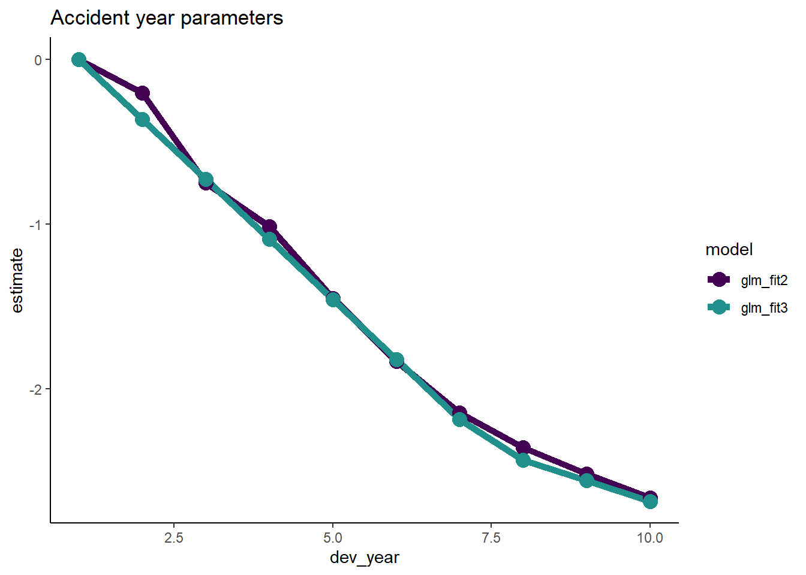

library(here)
library(data.table)
library(ggplot2)
library(viridis)
library(patchwork)
# I have elected not to attach knitr, so we need to use knitr::kable() below
options(scipen = 99) # get rid of scientific notation
# use this theme in all plots
ggplot2::theme_set(theme_classic())April 2023 update
The article below is my original article working through fitting a GLM to aggregate triangular data using the methods and data from the CAS Monograph Stochastic Loss Reserving using Generalized Linear Models.
Since then some or all of the article has re-published with some changes at:
Introduction
This post provides a worked example in R of fitting a GLM to some non-life claims reserving data. The example and data are drawn from the CAS Monograph Stochastic Loss Reserving using Generalized Linear Models. Here we follow through the application of the cross-classified model from that monograph to the data (Chapter 3), and follow through with the additional work to firstly simplify the model and secondly to improve the model fit through the use of some interaction terms (Chapter 7).
Setup
Before we begin, we first set up the R session by loading in the various packages that we need.
- here: I first heard about here from reading Jenny Bryan’s article on it and have been a fan of
hereand the R project structure ever since. It really helps with portability of code.- Basically it allows you to use relative rather than absolute file paths.
- If you want to run this notebook and don’t want to use
herethen all you need to do is put an appropriate pathname in for loading in the data from a CSV file. Location is not used anywhere else.
- data.table I really like
data.table- its power, speed and terseness. At some point though I may replace thedata.tablecode with base R to reduce dependencies. For now though, there isn’t a huge amount ofdata.tablecode.- Even if you don’t like
data.tablesyntax, thefreadandfwritefunctions can be very useful for reading and writing CSV files.
- Even if you don’t like
- ggplot2: create nice graphs easily
- knitr The notebook uses
kablefrom theknitrpackage. If you’re using RStudio to run this code in notebook format, then you should already have it. Otherwise you can install it, or you can simply replace all thekablecommands with print statements.
If you don’t have any of these packages you will need to install them via install.packages or, if using RStudio, via the Install buttom in the packages pane.
Data
The data are presented in Section 1.3 of the monograph. Ultimately the data were sourced from the Meyers and Shi (2011) database, and are the workers compensation triangle of the New Jersey Manufacturers Group.
For ease of use, I have created a CSV file with the data which is loaded in this code chunk. As noted above I use relative path names with the here package. If you don’t want to have a setup that works with here, just ensure the full pathname to the file is included in the fread statement below.
Once the data is loaded in, have a look at the start of it.
msdata <- data.table::fread(here::here("post/2019-11-07-traditional-style-reserving-using-glms/_glms_meyersshi.csv"))
# if needed replace here::here("data/glms_meyershi.csv") with
# the correct path and filename of where you put the data
setDT(msdata)
print(msdata[1:6,]) acc_year dev_year cumulative incremental
1: 1 1 41821 41821
2: 1 2 76550 34729
3: 1 3 96697 20147
4: 1 4 112662 15965
5: 1 5 123947 11285
6: 1 6 129871 5924So we have four columns:
acc_year: accident year, numbered from 1 to 10
dev_year: development year, also numbered from 1 to 10
cumulative: cumulative payments to date
incremental: incremental payments for that accident year, development year combination.
Let’s look at the data visually.
First we plot the cumulative amounts in each accident year
ggplot(data=msdata, aes(x=dev_year, y=cumulative, colour=as.factor(acc_year))) +
geom_line(size=1) +
scale_color_viridis_d(begin=0.9, end=0) +
ggtitle("Cumulative amounts by development year") +
theme(legend.position = "right", legend.title=element_blank(), legend.text=element_text(size=8))Warning: Using `size` aesthetic for lines was deprecated in ggplot2 3.4.0.
ℹ Please use `linewidth` instead.Now look at the incremental amounts
ggplot(data=msdata, aes(x=dev_year, y=incremental, colour=as.factor(acc_year))) +
geom_line(size=1) +
scale_color_viridis_d(begin=0.9, end=0) +
ggtitle("Incremental amounts by development year") +
theme(legend.position = "right", legend.title=element_blank(), legend.text=element_text(size=8))The data look quite well behaved - each year seems to have a similar development pattern.
Modelling
Initial model
The first model applied here is the Over-dispersed Poisson (ODP) cross classified (cc) model (Sections 3.3.2 and 3.3.3 of the monograph). This model has been shown to give the same results as the chain ladder algorithm.
To apply the model, we will use the glm function from the base R stats package. The cross-classified model requires separate levels for each of accident and development year so we first make a factor version of these variates.
msdata[, acc_year_factor := as.factor(acc_year)
][, dev_year_factor := as.factor(dev_year)
][, cal_year := acc_year + dev_year - 1]Now we fit the model and look at the results via summary.
- The family is the quasipoisson - this is how we fit an ODP model with
glm. - The link is log
- The formula is simply “incremental ~ 0 + acc_year_factor + dev_year_factor”
- The 0 tells
glmto fit a model without an intercept - We choose to do that here because then we can more easily compare the results to those in the monograph.
- The 0 tells
glm_fit1 <- glm(data = msdata,
family = quasipoisson(link = "log"),
formula = "incremental ~ 0 + acc_year_factor + dev_year_factor")
summary(glm_fit1)
Call:
glm(formula = "incremental ~ 0 + acc_year_factor + dev_year_factor",
family = quasipoisson(link = "log"), data = msdata)
Deviance Residuals:
Min 1Q Median 3Q Max
-21.493 -5.534 0.000 5.136 21.059
Coefficients:
Estimate Std. Error t value Pr(>|t|)
acc_year_factor1 10.65676 0.03164 336.794 < 0.0000000000000002 ***
acc_year_factor2 10.79533 0.02994 360.507 < 0.0000000000000002 ***
acc_year_factor3 10.89919 0.02887 377.465 < 0.0000000000000002 ***
acc_year_factor4 10.98904 0.02808 391.326 < 0.0000000000000002 ***
acc_year_factor5 11.03883 0.02783 396.654 < 0.0000000000000002 ***
acc_year_factor6 11.01590 0.02855 385.867 < 0.0000000000000002 ***
acc_year_factor7 11.00808 0.02945 373.734 < 0.0000000000000002 ***
acc_year_factor8 10.89050 0.03266 333.463 < 0.0000000000000002 ***
acc_year_factor9 10.83613 0.03669 295.348 < 0.0000000000000002 ***
acc_year_factor10 10.69108 0.05104 209.454 < 0.0000000000000002 ***
dev_year_factor2 -0.20466 0.02276 -8.993 0.00000000009767316 ***
dev_year_factor3 -0.74741 0.02819 -26.512 < 0.0000000000000002 ***
dev_year_factor4 -1.01667 0.03284 -30.954 < 0.0000000000000002 ***
dev_year_factor5 -1.45160 0.04214 -34.446 < 0.0000000000000002 ***
dev_year_factor6 -1.83254 0.05471 -33.495 < 0.0000000000000002 ***
dev_year_factor7 -2.14026 0.07150 -29.933 < 0.0000000000000002 ***
dev_year_factor8 -2.34827 0.09312 -25.218 < 0.0000000000000002 ***
dev_year_factor9 -2.51317 0.12673 -19.831 < 0.0000000000000002 ***
dev_year_factor10 -2.66449 0.19930 -13.369 0.00000000000000158 ***
---
Signif. codes: 0 '***' 0.001 '**' 0.01 '*' 0.05 '.' 0.1 ' ' 1
(Dispersion parameter for quasipoisson family taken to be 114.5364)
Null deviance: 27479374.2 on 55 degrees of freedom
Residual deviance: 4128.1 on 36 degrees of freedom
AIC: NA
Number of Fisher Scoring iterations: 3We now extract the coefficient table in a more convenient way and append it onto the glm_fit1 object for later use.
We will also print the table again in a nicer form to make it easier to compare to the first 3 columns of Table 3-5 of the monograph.
- If you do this, you should see that the results match.
# save the data for later use
glm_fit1$coeff_table <- data.table(parameter = names(glm_fit1$coefficients),
coeff_glm_fit1 = glm_fit1$coefficients)
# print out the table so we can compare against Table 3-5.
glm_fit1$coeff_table |>
knitr::kable(digits=c(0,3))| parameter | coeff_glm_fit1 |
|---|---|
| acc_year_factor1 | 10.657 |
| acc_year_factor2 | 10.795 |
| acc_year_factor3 | 10.899 |
| acc_year_factor4 | 10.989 |
| acc_year_factor5 | 11.039 |
| acc_year_factor6 | 11.016 |
| acc_year_factor7 | 11.008 |
| acc_year_factor8 | 10.891 |
| acc_year_factor9 | 10.836 |
| acc_year_factor10 | 10.691 |
| dev_year_factor2 | -0.205 |
| dev_year_factor3 | -0.747 |
| dev_year_factor4 | -1.017 |
| dev_year_factor5 | -1.452 |
| dev_year_factor6 | -1.833 |
| dev_year_factor7 | -2.140 |
| dev_year_factor8 | -2.348 |
| dev_year_factor9 | -2.513 |
| dev_year_factor10 | -2.664 |
Loss reserve
- We will calculate the loss reserve for this model
- This should give the same answers as the chain ladder algorithm
# first make the lower triangle data set
ay <- NULL
dy <- NULL
for(i in 2:10){
ay <- c(ay, rep(i, times=(i-1)))
dy <- c(dy, (10-i+2):10)
}
futdata <- data.table(acc_year = ay, dev_year = dy)
# make factors
futdata[, cal_year := acc_year + dev_year
][, acc_year_factor := as.factor(acc_year)
][, dev_year_factor := as.factor(dev_year)]
# make the prediction and sum by acc_year
x <- predict(glm_fit1, newdata = futdata, type="response")
futdata[, incremental := x]
ocl_year <- futdata[, lapply(.SD, sum), .SDcols=c("incremental"), by="acc_year"]
ocl_year |>
knitr::kable(digits=c(0, 0))| acc_year | incremental |
|---|---|
| 2 | 3398 |
| 3 | 8155 |
| 4 | 14579 |
| 5 | 22645 |
| 6 | 31865 |
| 7 | 45753 |
| 8 | 60093 |
| 9 | 80983 |
| 10 | 105874 |
- As expected, this matches the results in Table 3-2 of the monograph.
Model diagnostics
It’s always important to check that a model fits the data well, so here we look at the following:
- Residual Scatterplots
- by linear predictor
- by accident, development and calendar years
- Heat map of actual vs fitted
- In this we get the actual/fitted ratio in each (acc, dev) cell [subject to lower and upper bounds of (0.5, 2)] and then plot the colour-coded triangle of the actual/fitted values
- heat maps are helpful to check for model fit and may help to identify missing interactions.
Note on residuals with glm
- The residuals in a glm object accessed with
$residualsare residuals used in the model fitting algorithm. - For diagnostic purposes, the standardised deviance residuals are usually preferable to work with.
- These are the signed square roots of the contribution of the ith observation to the deviance, divided by hat matrix values.
- The
stats::rstandard()function may be used with glm objects to extract the standardised deviance residuals.
Generating the diagnostics
- First we prepare the data by adding the fitted values and residuals.
- Because this model has a lot of parameters, there are two observations where the fitted is exactly equal to the actual – (acc_year=1, dev_year=10) and (acc_year=10, dev_year=0). This is because these observations have a unique parameter.
- The deviance calculations below return NaN (not a number) for these points, but the residual should really be 0 so this adjustment is made manually.
- Also add actual/fitted ratios and the log of these (restricted to the range [log(0.5), log(2)]) - these will be used for a heatmap later.
- The restricted range is used to generate easier to read shadings in the heat-map, while the conversion to log means that the shading scales will be similar intensity for \(x\)% and \(1/x\) %
msdata[, residuals1 := rstandard(glm_fit1)
][, fitted1 := glm_fit1$fitted.values
][, linear_predictor1 := log(fitted1)
][, AvsF1 := incremental / fitted1
][, AvsF_restricted1 := log(pmax(0.5, pmin(2,AvsF1)))]
# check for NaN residuals
msdata[is.nan(residuals1),] acc_year dev_year cumulative incremental acc_year_factor dev_year_factor
1: 1 10 144781 2958 1 10
2: 10 1 43962 43962 10 1
cal_year residuals1 fitted1 linear_predictor1 AvsF1
1: 10 NaN 2958 7.992269 1
2: 10 NaN 43962 10.691081 1
AvsF_restricted1
1: -0.0000000000000019984014
2: 0.0000000000000008881784# these occur where we expect them so so replace with 0
msdata[is.nan(residuals1), residuals1 := 0]Look at the first 10 rows of msdata
head(msdata, 10) acc_year dev_year cumulative incremental acc_year_factor dev_year_factor
1: 1 1 41821 41821 1 1
2: 1 2 76550 34729 1 2
3: 1 3 96697 20147 1 3
4: 1 4 112662 15965 1 4
5: 1 5 123947 11285 1 5
6: 1 6 129871 5924 1 6
7: 1 7 134646 4775 1 7
8: 1 8 138388 3742 1 8
9: 1 9 141823 3435 1 9
10: 1 10 144781 2958 1 10
cal_year residuals1 fitted1 linear_predictor1 AvsF1
1: 1 -0.37704981 42478.725 10.656759 0.9845164
2: 2 0.06821815 34616.808 10.452095 1.0032410
3: 3 0.02211088 20117.514 9.909346 1.0014657
4: 4 0.50192703 15368.757 9.640092 1.0387958
5: 5 1.36344235 9948.355 9.205163 1.1343584
6: 6 -1.13119533 6796.876 8.824218 0.8715769
7: 7 -0.33754581 4996.553 8.516503 0.9556589
8: 8 -0.56680264 4058.159 8.308485 0.9220929
9: 9 -0.01379476 3441.253 8.143591 0.9981829
10: 10 0.00000000 2958.000 7.992269 1.0000000
AvsF_restricted1
1: -0.015604749951508145936
2: 0.003235741327323749146
3: 0.001464610789021573859
4: 0.038062125103388820546
5: 0.126067171138098593763
6: -0.137451186377785167236
7: -0.045354245283910396558
8: -0.081109303248732236846
9: -0.001818723883641001036
10: -0.000000000000001998401Now let’s look at the residual scatterplots - here I use the cowplot package to combine all 4 graphs into one plot.
In the linear predictor scatterplot, the points are colour coded so that the lighter points belong to the earlier development years, and the darker points belong to the later ones.
p1 <- ggplot(data=msdata, aes(x=linear_predictor1, y=residuals1, colour=dev_year)) +
geom_point(size=2) +
scale_colour_viridis(begin=0.9, end=0) +
theme(legend.position = "none") +
ggtitle("Linear predictor")
p2 <- ggplot(data=msdata, aes(x=acc_year, y=residuals1)) +
geom_point(size=2, colour="#2d708eff") +
ggtitle("Accident year")
p3 <- ggplot(data=msdata, aes(x=dev_year, y=residuals1)) +
geom_point(size=2, colour="#2d708eff") +
ggtitle("Development year")
p4 <- ggplot(data=msdata, aes(x=cal_year, y=residuals1)) +
geom_point(size=2, colour="#2d708eff") +
ggtitle("Calendar year")
# combine plots with patchwork
p <- (p1 + p2) / (p3 + p4)
pNow construct and draw the heat map. Note that the colours are:
- blue (A/F = 50%)
- white (A/F = 100%)
- red (A/F = 200%)
# heatmap code
# to get the correct shading I've plotted the log of the restricted A/F values
p_hm <- ggplot(data=msdata, aes(x=dev_year, y=acc_year)) +
geom_tile(aes(fill = AvsF_restricted1))+scale_y_reverse()+
scale_fill_gradient2(name="AvF_min", low="royalblue", mid="white", high="red", midpoint=0, space="Lab", na.value="grey50", guide="colourbar")+
labs(x="Development year", y="Accident year")+
theme(legend.position = "none")+
theme(axis.title.x = element_text(size=8), axis.text.x = element_text(size=7))+
theme(axis.title.y = element_text(size=8), axis.text.y = element_text(size=7))+
theme(panel.background = element_rect(fill = "grey", colour = "grey", size = 2, linetype = "solid"),
panel.grid = element_line(colour="grey")) +
NULLWarning: The `size` argument of `element_rect()` is deprecated as of ggplot2 3.4.0.
ℹ Please use the `linewidth` argument instead.print(p_hm)Refining the model
We could stop here - and just use the results from this model, which match those produced by the chain ladder. The diagnostics suggest that the model fits quite well. However can we:
- identify simplifications to the model to make it more parsinomious?
- identify any areas of poorer fit than may suggest missing model terms including interactions?
Simplifying the model
First we consider if we can use a parametric shape for the accident and development year parameters.
Accident year
First plot the accident year parameters.
# extract the data
dt_acc_year <- glm_fit1$coeff_table[grepl("acc_year", parameter),
][, acc_year := as.integer(gsub("acc_year_factor", "", parameter))]
# plot
ggplot(data=dt_acc_year, aes(x=acc_year, y=coeff_glm_fit1)) +
geom_line(size=2, colour="#440154ff") +
geom_point(size=4, colour="#440154ff") +
ggtitle("Accident year parameters")- Note that their shape closely resembles that of a parabola.
- This suggests that we can replace the 10 accident year parameters by
- the overall intercept
- an acc_year term
- an acc_year squarted term
- So refit the model on this basis.
- Drop the 0 from the glm_fit1 formula to allow the model to have an intecept
- Replace the acc_year_factor term with the parabola terms.
# add an x and x^2 term
msdata[, acc_year_2 := acc_year^2]
glm_fit2 <- glm(data = msdata,
family = quasipoisson(link = "log"),
formula = "incremental ~ acc_year + acc_year_2 + dev_year_factor")
summary(glm_fit2)
Call:
glm(formula = "incremental ~ acc_year + acc_year_2 + dev_year_factor",
family = quasipoisson(link = "log"), data = msdata)
Deviance Residuals:
Min 1Q Median 3Q Max
-28.5517 -5.1747 0.2691 4.5827 24.5421
Coefficients:
Estimate Std. Error t value Pr(>|t|)
(Intercept) 10.470978 0.034414 304.264 < 0.0000000000000002 ***
acc_year 0.200075 0.014219 14.071 < 0.0000000000000002 ***
acc_year_2 -0.017907 0.001356 -13.210 < 0.0000000000000002 ***
dev_year_factor2 -0.205555 0.021276 -9.661 0.00000000000243 ***
dev_year_factor3 -0.750108 0.026492 -28.314 < 0.0000000000000002 ***
dev_year_factor4 -1.014806 0.030982 -32.755 < 0.0000000000000002 ***
dev_year_factor5 -1.451958 0.039797 -36.484 < 0.0000000000000002 ***
dev_year_factor6 -1.830488 0.051662 -35.432 < 0.0000000000000002 ***
dev_year_factor7 -2.142154 0.067504 -31.734 < 0.0000000000000002 ***
dev_year_factor8 -2.352674 0.087924 -26.758 < 0.0000000000000002 ***
dev_year_factor9 -2.513722 0.119637 -21.011 < 0.0000000000000002 ***
dev_year_factor10 -2.660878 0.187820 -14.167 < 0.0000000000000002 ***
---
Signif. codes: 0 '***' 0.001 '**' 0.01 '*' 0.05 '.' 0.1 ' ' 1
(Dispersion parameter for quasipoisson family taken to be 102.5776)
Null deviance: 750824 on 54 degrees of freedom
Residual deviance: 4427 on 43 degrees of freedom
AIC: NA
Number of Fisher Scoring iterations: 3We see in the coefficient table part of the summary that the two acc_year terms are highly significant.
Now extract the coefficients and compare the previous and current fits.
- Remember that the intercept must be included in these calculations.
- Again, save the coefficient table in this extracted form with the glm_fit2 object for later use.
# extract the coefficient table
glm_fit2$coeff_table <- data.table(parameter = names(glm_fit2$coefficients), coeff_glm_fit2 = glm_fit2$coefficients)
print(glm_fit2$coeff_table) parameter coeff_glm_fit2
1: (Intercept) 10.47097818
2: acc_year 0.20007497
3: acc_year_2 -0.01790686
4: dev_year_factor2 -0.20555514
5: dev_year_factor3 -0.75010823
6: dev_year_factor4 -1.01480620
7: dev_year_factor5 -1.45195754
8: dev_year_factor6 -1.83048769
9: dev_year_factor7 -2.14215388
10: dev_year_factor8 -2.35267361
11: dev_year_factor9 -2.51372160
12: dev_year_factor10 -2.66087765Now compare the past and current parameter estimates for accident year.
# pull out the acc year coefficinents only
dt_acc_year[, coeff_glm_fit2 := glm_fit2$coeff_table[parameter == "acc_year", coeff_glm_fit2]*acc_year +
glm_fit2$coeff_table[parameter == "acc_year_2", coeff_glm_fit2]*acc_year^2 +
glm_fit2$coeff_table[parameter == "(Intercept)", coeff_glm_fit2]]
# make long for ggplot
dt_acc_year_plot <- melt(dt_acc_year, id.vars = "acc_year", measure.vars = c("coeff_glm_fit1", "coeff_glm_fit2"), variable.name="model", value = "estimate")
# remove the coeff_ from the model names
dt_acc_year_plot[, model := gsub("coeff_", "", model, fixed=TRUE)]
ggplot(data=dt_acc_year_plot, aes(x=acc_year, y=estimate, colour=model)) +
geom_line(size=2) +
geom_point(size=4) +
scale_colour_viridis_d(begin=0, end=0.5) +
ggtitle("Accident year parameters")- This looks very good - the fit is very similar, but we have 7 fewer parameters.
Development year
- Now we do the same thing for development year
- Note that the glm_fit2 model (and the glm_fit1 model too) do not have a parameter for dev_year = 1 as this is the base level.
- This means that the parameter is really 0, so we must remember to include this.
# extract the data
dt_dev_year <- glm_fit2$coeff_table[grepl("dev_year", parameter),
][, dev_year := as.integer(gsub("dev_year_factor", "", parameter))][] # known data.table printing bug
# add year 1
dt_dev_year <- rbind(dt_dev_year, data.table(parameter="dev_year_factor1", coeff_glm_fit2=0, dev_year=1))
setorder(dt_dev_year, dev_year)
# plot
ggplot(data=dt_dev_year, aes(x=dev_year, y=coeff_glm_fit2)) +
geom_line(size=2, colour="#440154ff") +
geom_point(size=4, colour="#440154ff") +
ggtitle("Development year parameters")- Looking at this plot, it appears that a straight line would fit quite well
- This fit would be improved by allowing the straight line to bend (have a knot) at dev_year = 7
- So let’s try this below
- note we actually fit dev_year - 1 rather than dev_year
- this means that the parameter estimate at dev_year = 1 is 0, just as it is in the glm_fit2 model, so it makes the results comparable
- if we fit dev_year, then the parameter estimate at dev_year=1 would be non-zero, so the two fits would be shifted relative to each other and we would need to adjust for that.
# add dev-1 and dev-7 terms
msdata[, dev_year_m1 := dev_year - 1]
msdata[, dev_year_ge_7 := pmax(dev_year-7.5, 0)]
# fit the model
glm_fit3 <- glm(data = msdata,
family = quasipoisson(link = "log"),
formula = "incremental ~ acc_year + acc_year_2 + dev_year_m1 + dev_year_ge_7")
# extract and save the coefficient table
glm_fit3$coeff_table <- data.table(parameter = names(glm_fit3$coefficients), coeff_glm_fit3 = glm_fit3$coefficients)
# display a summary of the model
summary(glm_fit3)
Call:
glm(formula = "incremental ~ acc_year + acc_year_2 + dev_year_m1 + dev_year_ge_7",
family = quasipoisson(link = "log"), data = msdata)
Deviance Residuals:
Min 1Q Median 3Q Max
-25.301 -9.262 -2.080 5.893 42.841
Coefficients:
Estimate Std. Error t value Pr(>|t|)
(Intercept) 10.509475 0.052096 201.734 < 0.0000000000000002 ***
acc_year 0.204224 0.021608 9.451 0.00000000000104 ***
acc_year_2 -0.018295 0.002058 -8.891 0.00000000000719 ***
dev_year_m1 -0.364073 0.008845 -41.160 < 0.0000000000000002 ***
dev_year_ge_7 0.238860 0.088426 2.701 0.00941 **
---
Signif. codes: 0 '***' 0.001 '**' 0.01 '*' 0.05 '.' 0.1 ' ' 1
(Dispersion parameter for quasipoisson family taken to be 242.0614)
Null deviance: 750824 on 54 degrees of freedom
Residual deviance: 11879 on 50 degrees of freedom
AIC: NA
Number of Fisher Scoring iterations: 4- Assuming the fit is satisfactory, our original model with 19 parmaeters has now been simplified to 5 parameters - much more parsimonious and robust.
- Let’s check the fit by dev_year to see.
# get the dev_year fit under the new model and add to the data.table containing the factor level parameters
p1 <- glm_fit3$coeff_table[parameter == "dev_year_m1", coeff_glm_fit3]
p2 <- glm_fit3$coeff_table[parameter == "dev_year_ge_7", coeff_glm_fit3]
dt_dev_year[, coeff_glm_fit3 := p1*(dev_year-1) + p2*pmax(0, dev_year-7.5) ]
# make long for ggplot
dt_dev_year_plot <- melt(dt_dev_year, id.vars = "dev_year", measure.vars = c("coeff_glm_fit2", "coeff_glm_fit3"), variable.name="model", value = "estimate")
# remove the coeff_ from the model names
dt_dev_year_plot[, model := gsub("coeff_", "", model, fixed=TRUE)]
ggplot(data=dt_dev_year_plot, aes(x=dev_year, y=estimate, colour=model)) +
geom_line(size=2) +
geom_point(size=4) +
scale_colour_viridis_d(begin=0, end=0.5) +
ggtitle("Accident year parameters")
- This looks good.
- However dev_year = 2 is a bit underfit in the latest model, so we can add something to improve this fit
- So refit and replot.
msdata[, dev_year_eq_2 := as.integer(dev_year == 2)]
glm_fit4 <- glm(data = msdata,
family = quasipoisson(link = "log"),
formula = "incremental ~ acc_year + acc_year_2 + dev_year_m1 + dev_year_ge_7 + dev_year_eq_2")
glm_fit4$coeff_table <- data.table(parameter = names(glm_fit4$coefficients), coeff_glm_fit4 = glm_fit4$coefficients)
p1 <- glm_fit4$coeff_table[parameter == "dev_year_m1", coeff_glm_fit4]
p2 <- glm_fit4$coeff_table[parameter == "dev_year_ge_7", coeff_glm_fit4]
p3 <- glm_fit4$coeff_table[parameter == "dev_year_eq_2", coeff_glm_fit4]
dt_dev_year[, coeff_glm_fit4 := p1*(dev_year-1) + p2*pmax(0, dev_year-7.5) + p3*(dev_year == 2) ]
# make long for ggplot
dt_dev_year_plot <- melt(dt_dev_year, id.vars = "dev_year", measure.vars = c("coeff_glm_fit2", "coeff_glm_fit4"), variable.name="model", value = "estimate")
# remove the coeff_ from the model names
dt_dev_year_plot[, model := gsub("coeff_", "", model, fixed=TRUE)]
ggplot(data=dt_dev_year_plot, aes(x=dev_year, y=estimate, colour=model)) +
geom_line(size=2) +
geom_point(size=4) +
scale_colour_viridis_d(begin=0, end=0.5) +
ggtitle("Accident year parameters")- Looks good!
Identifying missing structure
- The second part of the model refining process involves checking for missing structure.
- Let’s have a better look at the heat map.
msdata[, residuals4 := rstandard(glm_fit4)
][, fitted4 := glm_fit4$fitted.values
][, linear_predictor4 := log(fitted4)
][, AvsF4 := incremental / fitted4
][, AvsF_restricted4 := log(pmax(0.5, pmin(2,AvsF4)))]
p_hm <- ggplot(data=msdata, aes(x=dev_year, y=acc_year)) +
geom_tile(aes(fill = AvsF_restricted4))+scale_y_reverse()+
scale_fill_gradient2(name="AvF_min", low="royalblue", mid="white", high="red", midpoint=0, space="Lab", na.value="grey50", guide="colourbar")+
labs(x="Development year", y="Accident year")+
theme(legend.position = "none")+
theme(axis.title.x = element_text(size=8), axis.text.x = element_text(size=7))+
theme(axis.title.y = element_text(size=8), axis.text.y = element_text(size=7))+
theme(panel.background = element_rect(fill = "grey", colour = "grey", size = 2, linetype = "solid"),
panel.grid = element_line(colour="grey")) +
NULL
print(p_hm)Let’s look at the heatmap again, with some annotations
p_hm +
annotate(geom="rect", xmin= 0.5, xmax=1.5, ymin=0.5, ymax=6.5, colour="darkblue", alpha=0.1, size=1.5) +
annotate(geom="rect", xmin= 0.5, xmax=1.5, ymin=6.5, ymax=10.5, colour="darkred", alpha=0.1, size=1.5) +
annotate(geom="rect", xmin= 1.5, xmax=2.5, ymin=0.5, ymax=6.5, colour="darkred", alpha=0.1, size=1.5) +
annotate(geom="rect", xmin= 1.5, xmax=2.5, ymin=6.5, ymax=9.5, colour="darkblue", alpha=0.1, size=1.5) +
annotate(geom="segment", x=3, xend=3, y=1, yend=8, arrow=arrow(), colour="darkblue", size=2) +
annotate(geom="rect", xmin= 3.5, xmax=4.5, ymin=0.5, ymax=7.5, colour="darkred", alpha=0.1, size=1.5) We see:
- development year 1, a distinct area of blue in the earlier accident years (A < F), followed by red (A > F)
- development year 2, a distinct area of red in the earlier accident years (A > F), followed by blue (A < F)
- development year 3, a possible progression from red to blue with increasing accident year (F increasing relative to A)
- development year 4, nearly all red (A > F)
This suggests the payment pattern has altered and can be accommodated by (mostly) interaction terms within the GLM. Consider adding the following terms:
- (development year = 1) * (accident year is between 1 and 6)
- (development year = 2) * (accident year is between 1 and 6)
- (development year = 3) * (accident year linear trend)
- (development year = 4)
So, let’s refit the model with terms to capture these and have a look at the heat map again
# add the new terms
msdata[, dev_year_eq_1 := as.integer(dev_year == 1)]
msdata[, dev_year_eq_3 := as.integer(dev_year == 3)]
msdata[, dev_year_eq_4 := as.integer(dev_year == 4)]
msdata[, acc_year_1_6 := as.integer(acc_year >= 1 & acc_year <= 6)]
glm_fit5 <- glm(data = msdata,
family = quasipoisson(link = "log"),
formula = "incremental ~ acc_year + acc_year_2 + dev_year_m1 + dev_year_ge_7 + dev_year_eq_2 + dev_year_eq_4 +
dev_year_eq_1:acc_year_1_6 + dev_year_eq_2:acc_year_1_6 + dev_year_eq_3:acc_year ")
glm_fit5$coeff_table <- data.table(parameter = names(glm_fit5$coefficients), coeff_glm_fit5 = glm_fit5$coefficients)
# print the coefficient table
glm_fit5$coeff_table |>
knitr::kable(digits=c(0, 4))| parameter | coeff_glm_fit5 |
|---|---|
| (Intercept) | 10.4904 |
| acc_year | 0.2066 |
| acc_year_2 | -0.0183 |
| dev_year_m1 | -0.3685 |
| dev_year_ge_7 | 0.2720 |
| dev_year_eq_2 | 0.0375 |
| dev_year_eq_4 | 0.0528 |
| dev_year_eq_1:acc_year_1_6 | -0.0671 |
| dev_year_eq_2:acc_year_1_6 | 0.1273 |
| acc_year:dev_year_eq_3 | -0.0113 |
This model should match that displayed in Table 7-5 of the monograph - and indeed it does (some very minor differences in parameter values - the model in the monograph was fitted in SAS).
Look at the heat map again with annotations - has the model resolved the identified issues?
# attach fitteds and residuals
msdata[, residuals5 := rstandard(glm_fit5)
][, fitted5 := glm_fit5$fitted.values
][, linear_predictor5 := log(fitted5)
][, AvsF5 := incremental / fitted5
][, AvsF_restricted5 := log(pmax(0.5, pmin(2,AvsF5)))]
p_hm <- ggplot(data=msdata, aes(x=dev_year, y=acc_year)) +
geom_tile(aes(fill = AvsF_restricted5))+scale_y_reverse()+
scale_fill_gradient2(name="AvF_min", low="royalblue", mid="white", high="red", midpoint=0, space="Lab", na.value="grey50", guide="colourbar")+
labs(x="Development year", y="Accident year")+
theme(legend.position = "none")+
theme(axis.title.x = element_text(size=8), axis.text.x = element_text(size=7))+
theme(axis.title.y = element_text(size=8), axis.text.y = element_text(size=7))+
theme(panel.background = element_rect(fill = "grey", colour = "grey", size = 2, linetype = "solid"),
panel.grid = element_line(colour="grey")) +
annotate(geom="rect", xmin= 0.5, xmax=1.5, ymin=0.5, ymax=6.5, colour="darkblue", alpha=0.1, size=1.5) +
annotate(geom="rect", xmin= 0.5, xmax=1.5, ymin=6.5, ymax=10.5, colour="darkred", alpha=0.1, size=1.5) +
annotate(geom="rect", xmin= 1.5, xmax=2.5, ymin=0.5, ymax=6.5, colour="darkred", alpha=0.1, size=1.5) +
annotate(geom="rect", xmin= 1.5, xmax=2.5, ymin=6.5, ymax=9.5, colour="darkblue", alpha=0.1, size=1.5) +
annotate(geom="segment", x=3, xend=3, y=1, yend=8, arrow=arrow(), colour="darkblue", size=2) +
annotate(geom="rect", xmin= 3.5, xmax=4.5, ymin=0.5, ymax=7.5, colour="darkred", alpha=0.1, size=1.5)
print(p_hm)This looks much better.
We should also look at the residual plots again
p1 <- ggplot(data=msdata, aes(x=linear_predictor5, y=residuals5, colour=dev_year)) +
geom_point(size=2) +
scale_colour_viridis(begin=0.9, end=0) +
theme_bw() +
theme(legend.position = "none") +
ggtitle("Linear predictor")
p2 <- ggplot(data=msdata, aes(x=acc_year, y=residuals5)) +
geom_point(size=2, colour="#2d708eff") +
theme_bw() +
ggtitle("Accident year")
p3 <- ggplot(data=msdata, aes(x=dev_year, y=residuals5)) +
geom_point(size=2, colour="#2d708eff") +
theme_bw() +
ggtitle("Development year")
p4 <- ggplot(data=msdata, aes(x=cal_year, y=residuals5)) +
geom_point(size=2, colour="#2d708eff") +
theme_bw() +
ggtitle("Calendar year")
p <- (p1 + p2) / (p3 + p4)
p
Loss reserve
- Now that we have a model, let’s produce the estimate of the outstanding claims by accident year and in total.
- Take the lower triangle data [futdata] created above
- Add on the new variates we created
- Score the model on this data
- Summarise the results
Create the data and score using predict
# add all model variates
futdata[, acc_year_2 := acc_year^2
][, dev_year_m1 := dev_year - 1
][, dev_year_ge_7 := pmax(0, dev_year - 7.5)
][, dev_year_eq_1 := as.integer(dev_year == 1)
][, dev_year_eq_2 := as.integer(dev_year == 2)
][, dev_year_eq_3 := as.integer(dev_year == 3)
][, dev_year_eq_4 := as.integer(dev_year == 4)
][, acc_year_1_6 := as.integer(acc_year>=1 & acc_year <=6)]
x <- predict(glm_fit5, newdata = futdata, type="response")
futdata[, incremental := x]
head(futdata) acc_year dev_year cal_year acc_year_factor dev_year_factor incremental
1: 2 10 12 2 10 3618.769
2: 3 9 12 3 9 4470.907
3: 3 10 13 3 10 4059.635
4: 4 8 12 4 8 5324.841
5: 4 9 13 4 9 4835.016
6: 4 10 14 4 10 4390.250
acc_year_2 dev_year_m1 dev_year_ge_7 dev_year_eq_1 dev_year_eq_2
1: 4 9 2.5 0 0
2: 9 8 1.5 0 0
3: 9 9 2.5 0 0
4: 16 7 0.5 0 0
5: 16 8 1.5 0 0
6: 16 9 2.5 0 0
dev_year_eq_3 dev_year_eq_4 acc_year_1_6
1: 0 0 1
2: 0 0 1
3: 0 0 1
4: 0 0 1
5: 0 0 1
6: 0 0 1Get reserves by accident year and in total
ocl_year <- futdata[, lapply(.SD, sum), .SDcols=c("incremental"), by="acc_year"]
ocl_total <- ocl_year[, sum(incremental)]
ocl_year |>
knitr::kable(digits=c(0, 0))| acc_year | incremental |
|---|---|
| 2 | 3619 |
| 3 | 8531 |
| 4 | 14550 |
| 5 | 22173 |
| 6 | 32458 |
| 7 | 45695 |
| 8 | 62955 |
| 9 | 79301 |
| 10 | 101212 |
The total reserve is
ocl_total |> round(0)[1] 370493- These results are similar, though not identical, to the results given in Table 7-6 of the monograph.
- This is because the forecast column of the monograph contains bootstrapped means rather than the model mean.
Conclusion
The aim of this article has been to demonstrate fitting a GLM to a loss reserve following the example used in the CAS monograph. We started with the chain ladder equivalent - the cross classified model with an over-dispersed Poisson distribution, then first simplified it and second, extended it to include some interactions. We also cover how to create some of the plots discussed in the monograph in R, in particular residual scatter plots and the heat maps.
Session information
To assist with reproducibility, here are details of my R session.
sessionInfo() R version 4.2.3 (2023-03-15 ucrt)
Platform: x86_64-w64-mingw32/x64 (64-bit)
Running under: Windows 10 x64 (build 19045)
Matrix products: default
locale:
[1] LC_COLLATE=English_Australia.utf8 LC_CTYPE=English_Australia.utf8
[3] LC_MONETARY=English_Australia.utf8 LC_NUMERIC=C
[5] LC_TIME=English_Australia.utf8
attached base packages:
[1] stats graphics grDevices datasets utils methods base
other attached packages:
[1] patchwork_1.1.2 viridis_0.6.2 viridisLite_0.4.1 ggplot2_3.4.2
[5] data.table_1.14.8 here_1.0.1
loaded via a namespace (and not attached):
[1] knitr_1.42 magrittr_2.0.3 munsell_0.5.0 colorspace_2.1-0
[5] R6_2.5.1 rlang_1.1.1 fastmap_1.1.1 fansi_1.0.4
[9] tools_4.2.3 grid_4.2.3 gtable_0.3.3 xfun_0.39
[13] utf8_1.2.3 cli_3.6.1 withr_2.5.0 htmltools_0.5.5
[17] yaml_2.3.7 rprojroot_2.0.3 digest_0.6.31 tibble_3.2.1
[21] lifecycle_1.0.3 gridExtra_2.3 farver_2.1.1 htmlwidgets_1.6.2
[25] vctrs_0.6.2 glue_1.6.2 evaluate_0.20 rmarkdown_2.21
[29] labeling_0.4.2 pillar_1.9.0 compiler_4.2.3 scales_1.2.1
[33] jsonlite_1.8.4 renv_0.17.3 pkgconfig_2.0.3